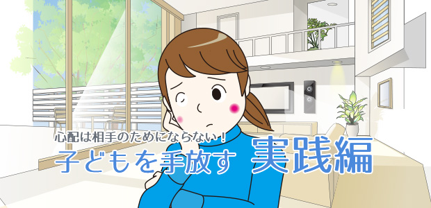

子どもを心配するメカニズム
前回（⇒子どもに依存しているかも？親は子どもの心配をするな）は子どもを心配するより「信じて手放す」ことの方が大切というお話をしました。
そもそも子どもを―子どもに限らないが―心配するということは、子どもに対して「あなたのすることは心もとなくて信頼できない。」と言ってるわけです。
要するに信じていない！！
しかし私たち日本人は他者を心配することが善だと思っているのではないでしょうか。
これは親子関係に限りません。
友人同士。先輩と後輩。上司と部下。近所づき合い。これらの人間関係において、相手を思いやるときの表現形態として「心配」が使われる。
でも実はこの「心配」が曲者なのです。
たとえば友人から友人に、先輩から後輩に、上司が部下に、近所のオジさんが悪ガキ（笑）にその言動なりふるまいを正したい、アドバイスしたい、苦言を呈したいとき…。
「こんなこと言いたくないけどあなたのことが心配だから…」という言い方をしませんか。
「あなたが心配だから…」と言われると人は反発しにくいものです。
心配してあげた→心配してくれてありがたいあるいは心配かけて申し訳ない、となります。
なぜなら心配することは相手を思いやることで、従って心配は善だからです。
こうして私たちは相手をコントロールするために心配してあげるという巧妙な手段を用いているのだと言えます。
心配する方は本気で相手のことを思っているつもりですが奥底には「このままではいけないから正してやろう」というコントロール欲求が隠れています。
だからいくら心配されても人は変わることはできないのです。
心配は同情や憐れみと同じで人を受け身にするからです。
主体的に動こうというエネルギーを奪うからです。
人は心の底から納得したときでなければ変わることができません。
心配するという行為は一段高い所から低い所にいる者へ「お前は分かっていない。だからこちらの言うようにふるまえ」という、上から目線の誘導行為で、相手の無意識の反発や無気力を引き起こしてしまうのです。
中には「心配されること＝同情」に甘える者も出てきます。心配されることに居心地の良さを覚えるのです。
そうなると益々心配される行動に走ります。そんな例をよく見ます。
心配は相手のためにならない。
すぐにできる！子どもの手放し方
このことを私は講演でも保護者の集い、個人面談でも口をすっぱくして言って来ました。
多くの人は「分かった」と言います。
そして信じて手放すことの大切さを説くと、皆さん「頭では分かるのですが…」と答えます。
頭で分かるというのは分かっていません（笑）。
その証拠にどうすれば信じて手放すことができるのでしょうと聞きます。
「どうすれば」と聞くこと自体、ここまで書いて来た心配することの無意味さ、危険性を充分に理解していないからです。
それが腑に落ちたなら簡単に手放せるはずだからです。
ですから親のあり方としてはまず心配することをやめる。子どものあれこれを先回りして予測したり、このままでは悪い方へ向かうのではなどと思考をめぐらせることを取りあえずやめてみる。
そうして子どもの言動、ふるまい、態度を曇りのない眼で客観的に見ること。ただ、そのままの姿をそのままのものとして余計な判断や感情を差しはさまず、見守る。
判断や感情や思考がざわつくなら心配をやめられていないということです。
子どもの立居ふるまい､姿を映画か何かを見るような気持ちで冷静に見つめ続けること。
何か言うべきと思ったらそのつど立ち止まって本心から言いたいことなのかどうか。いま言わなければいけないことなのか一瞬でも考えてから言う。
これは言いたいことを我慢するのとは違います。多くの親は勘違いしています。
信じて手放すことは親が言いたいことを言わないように我慢することではありません。
それどころか本当に信じて手放すことができたなら逆に、言うべきことが適切なタイミングで正確な言葉となって出てきます。
自然とタイムリーな言葉が出てくるのです。
心配することをやめて、ありのままの子どもの実像を冷静客観的に見つめることを早速やってみてください。
子どもの態度に変化が表われるはずです。
これを一ヶ月間やってみて下さい。
早ければ二、三週間で効果は表われます。
頑張って下さい。心配しなくても大丈夫です。